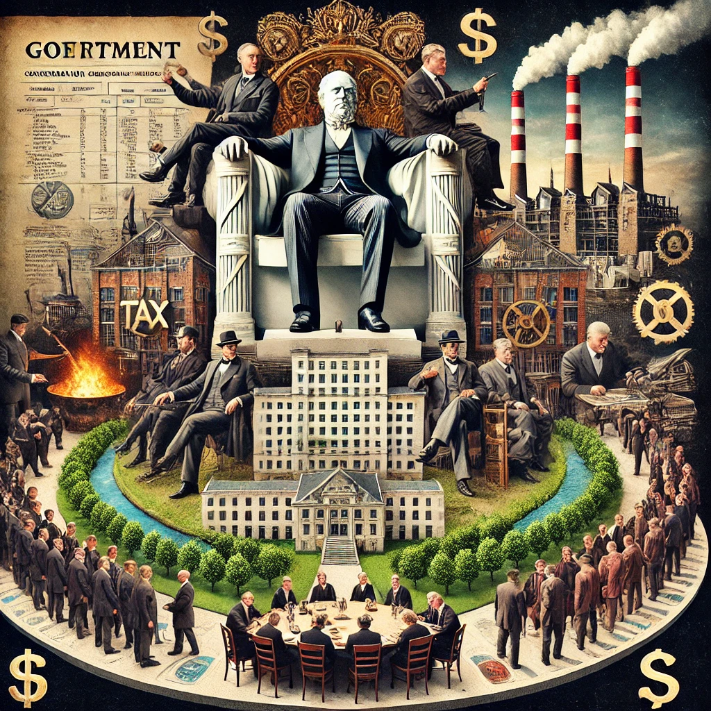

Este capítulo se centra en el deseo de las élites de concentrar riqueza y poder a través de las instituciones extractivas. Los autores explican cómo, a lo largo de la historia, muchas naciones han fallado debido a la concentración del poder en manos de una minoría que establece leyes y políticas que favorecen sus propios intereses.
Desde el punto de vista empresarial, este capítulo destaca cómo las empresas extractivas forman parte de este sistema. Las empresas que operan bajo estas condiciones se benefician de privilegios exclusivos otorgados por el gobierno, ya sea mediante contratos lucrativos, exenciones fiscales o monopolios estatales. Estos privilegios impiden la competencia y la innovación, lo que limita el desarrollo económico general.